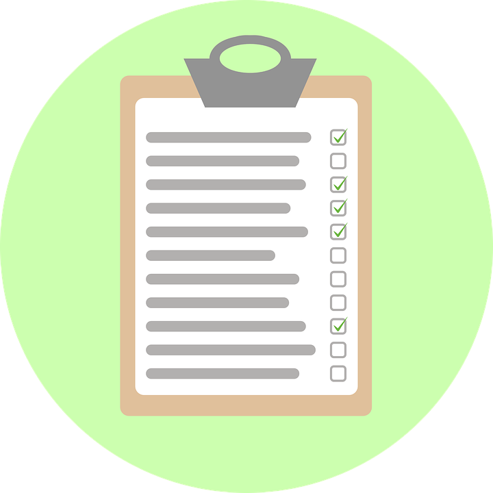

public Person(string name) {
public string Name(string name) {
set { _name = value; }
public class Program {
if( me.Name == "Alexandre Hormigos" ) {
Console.WriteLine( "Profession : Développeur Web");
Console.WriteLine( "Lieu de travail : Secours Populaire Français");
else {
}
QUALITÉS PERSONNELLES
Voici quelques traits de personnalités qui me caractérisent
PERSÉVÉRANCE
infoSans ce trait de caractère, je n’aurais peut-être pas eu la vie professionnelle que j’ai aujourd’hui. Je sais toujours, au fond de moi, que lorsque je commence un projet, qu’il soit professionnel ou personnel, qu’il est atteignable par la volonté et la persévérence.
PATIENCE
infoJe sais que rien ne se fait sans une bonne dose de patience. À force de patience et de calme, on parvient toujours à un meilleur résultat que si on se précipite et on s'impatiente quand à la concrétisation d'un projet, qu'il soit professionnel comme personnel.
ORGANISATION
infoMon organisation et ma rigueur sont souvent mis en avant par mon entourage. Avant même de commencer à travailler sur un projet, il est nécessaire pour moi d'organiser et de structurer les différentes étapes du processus de réalisation. Pour moi, un projet qui commence avec une mauvaise organisation est un projet compromis.
La générosité dans l'envie

Ma propre définition de la persévérance c'est faire preuve de générosité dans l'envie et la volonté d'entreprendre dans ses projets professionnels comme personnels.
Sans ce trait de caractère, j'aurais eu beaucoup plus de difficultés quand à la réalisation de mon projet de reconversion professionnels.
Je peux très simplement faire un parallèle concret sur mes débuts dans ma carrière de développeur Web au sein du Secours Populaire. N’ayant aucune connaissance et aucune expérience dans le domaine de l’informatique, très peu de personne auraient misé sur la réussite de ce projet de reconversion.
Plus précisément, on m’a fixé, dés le début, des objectifs très précis et très ambitieux pour moi à l’époque. Il s’agissait de se connecter et de réussir une requête qui me paraît simple aujourd’hui, l’affichage d’une information sur une page venant d’une base de donnée en utilisant ADO pour réaliser un simple formulaire en ASP.Net. Je suis resté bloqué pendant un long moment sur un problème sans jamais me dire que c’était trop compliqué et que je n’y parviendrait pas. J’ai fini par résoudre mon problème grâce à la persévérance, sans cela on aurait fini peut-être par me montrer, mais cela n’aurait pas été ma réussite, le fruit de mon propre travail.
Patience est mère de sûreté
Être patient, ce n'est pas, selon moi, être passif et subir les évènement. Bien au contraire, la patience consiste à attendre le bon moment pour agir mais cela veut surtout dire agir à bon escient et sans excès. Ainsi je pense qu'une personne impatiente agira toujours avec excès et précipitation lorsqu'elle commencera à travailler sur un projet car elle recherchera toujours un résultat immédiat qui ne sera pas forcément à la hauteur de ses espérances.
Cette patience, j'ai du en faire preuve lorsque j'étais à la recherche de mon poste de Développeur Web que j'occupe actuellement au sein du Secours Populaire Français. J'ai du apprendre à attendre des réponses à des demandes d'emplois que je faisais mais surtout à ne pas forcément avoir de réponses après de longues heures de recherches et de rédactions de lettres de motivations.
Si j'avais été impatient, jamais je ne serais parvenu à obtenir le résultat que j'ai aujourd'hui. Cette patience m'a permis de me remettre en question, de faire évoluer ma démarche de recherche d'emploi mais surtout à ne pas me précipiter lorsqu'il a fallu faire un choix.
Cette philosophie, je l'applique aujourd'hui dans la plupart des projets professionnels que j'aborde. Quand je suis confronté à une difficulté, je prends le temps de rechercher et de trouver une solution qui me paraît être la meilleure possible. Pour beaucoup, cela semble contre-productif mais je pense que la patience permet de gagner du temps face à la précipitation et l'éparpillement.
S'organiser pour mieux avancer
L'organisation, ce n'est pas forcément être rigide dans ses idées et son mode de fonctionnement. Beaucoup confonde organisation et esprit obtus, non ouvert à l'évolution et l'évolutivité. L'organisation permet, selon moi d'anticiper l'évolution d'une demande qui va forcément arriver à un moment ou un autre.
Cette organisation, j'ai su l'utiliser à bon escient dans le cadre de mon activité professionnelle. Elle est rassurante pour moi mais aussi et surtout pour celles et ceux qui travaillent avec moi car on sait précisément ce que je veux faire et comment.
De plus, elle permet de se prémunir de situations délicates qui peuvent arriver au cours de la vie d'un projet. Ainsi, au cours d'un projet sur lequel je travallais, une personne est arrivée précipitamment à mon bureau. Elle se plaignait du fait qu'une fonctionnalité n'étais pas implémentée dans le projet en question.
Pour lui répondre, je me suis appuyé sur le rapport préliminaire sur lequel on avait travaillé ensemble. Ceci a permis de recentrer la conversation, de calmer les inquiétudes de cette personne mais surtout de montrer qu'une organisation claire et nette était nécessaire à la concrétisation de ce projet.
L'évolutivité d'un projet est une composante nécessaire à prendre en compte et je l'ai prise en compte, après discussion avec l'ensemble des personnes concernées. J'ai tout simplement revu mon organisation en considérant la demande comme une mise à jour d'une étape déjà effectuée dans le projet.
Sans cette organisation, jamais je ne pourrais avancer sereinement dans les projets que j'entreprends car elle me permet de les aborder plus sereinement. Cette vision est aussi utile lors de la phase de finalisation d'un projet, car il s'agit du moment où la demande est souvent la plus forte en terme d'évolutions.
COMPÉTENCES TECHNIQUES
Ce que je sais faire
WEB DESIGN
Réalisation de site web responsive, animation avec la gestion du DOM, utilisation d'AJAX, refonte de la partie graphique de site web
DÉVELOPPEMENT
Utilisation de la technologie ASP.Net (WebForms et MVC) et C#, programmation orientée objet (POO), ADO.Net et Entity FrameWork pour la liaison avec la base de donnée, Utilisation de Reporting Services pour la création de rapports téléchargeable.
BASE DE DONNÉES
Utilisation de la technologie MicroSoft SQL Server pour la gestion des bases de données. Rédaction de requêtes simples et imbriquées, utilisation des procédures stockées, création de base de données relationnelles, utilisation de la technologie Full Text Search pour la recherche par mot-clé.
FORMATION
Mise en place d'atelier formation et formation dans différents cadres et contextes. Organisation et mise en place des formations (mailing, appel, préparation). Présentation et organisation de débat lors de ces formations.
COMPÉTENCES ANNEXES WEB
Java (Swing, JEE, application n-tiers), PHP et Node Js (Notions). Visual Basic (Utilisation dans la technologie Reporting Services, Réalisation d'un jeu simple). Angular (Conception d'une mini-application type réseau social). Babylon Js (Conception d'un mini-jeu en 3D en JavaScript).
GESTION DES PROJETS
Rédaction de rapport préliminaire avant la mise en place d'une nouvelle solution technique. Élaboration d'un calendrier prévisionnel. Organisation de réunions préalables à la phase de développement du projet. Évolution et correction prise en compte lors du cycle de développement du projet.
PROJETS
Voici quelques projets sur lesquels j'ai travaillé, professionnels comme personnels